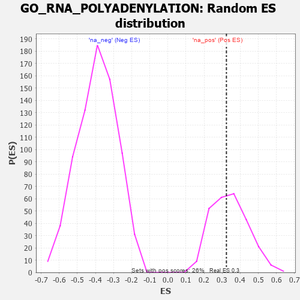

| | | Dataset | 7d |
| Phenotype | NoPhenotypeAvailable |
| Upregulated in class | na_pos |
| GeneSet | GO_RNA_POLYADENYLATION |
| Enrichment Score (ES) | 0.32364547 |
| Normalized Enrichment Score (NES) | 0.94798476 |
| Nominal p-value | 0.5486381 |
| FDR q-value | 0.7759379 |
| FWER p-Value | 1.0 |
Table: GSEA Results Summary
 Fig 1: Enrichment plot: GO_RNA_POLYADENYLATION
Fig 1: Enrichment plot: GO_RNA_POLYADENYLATION
Profile of the Running ES Score & Positions of GeneSet Members on the Rank Ordered List
| PROBE | GENE SYMBOL | GENE_TITLE | RANK IN GENE LIST | RANK METRIC SCORE | RUNNING ES | CORE ENRICHMENT | | 1 | CPSF2 | | | 440 | 0.666 | -0.0002 | Yes |
| 2 | LEO1 | | | 463 | 0.655 | 0.0513 | Yes |
| 3 | CPSF6 | | | 778 | 0.538 | 0.0563 | Yes |
| 4 | CTR9 | | | 964 | 0.492 | 0.0738 | Yes |
| 5 | SSU72 | | | 996 | 0.485 | 0.1101 | Yes |
| 6 | CPSF1 | | | 1005 | 0.482 | 0.1490 | Yes |
| 7 | GRSF1 | | | 1164 | 0.452 | 0.1665 | Yes |
| 8 | CLP1 | | | 1182 | 0.450 | 0.2016 | Yes |
| 9 | CPSF3 | | | 1237 | 0.440 | 0.2313 | Yes |
| 10 | CDC73 | | | 1265 | 0.436 | 0.2640 | Yes |
| 11 | SNRPA | | | 1340 | 0.422 | 0.2896 | Yes |
| 12 | CSTF3 | | | 1408 | 0.409 | 0.3150 | Yes |
| 13 | PAF1 | | | 1588 | 0.376 | 0.3236 | Yes |
| 14 | SYMPK | | | 2381 | 0.248 | 0.2446 | No |
| 15 | CSTF2 | | | 3029 | 0.145 | 0.1752 | No |
| 16 | TUT4 | | | 3394 | 0.090 | 0.1369 | No |
| 17 | HSF1 | | | 3718 | 0.039 | 0.0995 | No |
| 18 | PCF11 | | | 4958 | -0.190 | -0.0406 | No |
| 19 | TUT7 | | | 5997 | -0.471 | -0.1321 | No |
| 20 | CDK9 | | | 7266 | -1.138 | -0.1974 | No |
| 21 | WDR33 | | | 7939 | -3.452 | 0.0040 | No |
Table: GSEA details [plain text format]

Fig 2: GO_RNA_POLYADENYLATION: Random ES distribution
Gene set null distribution of ES for GO_RNA_POLYADENYLATION